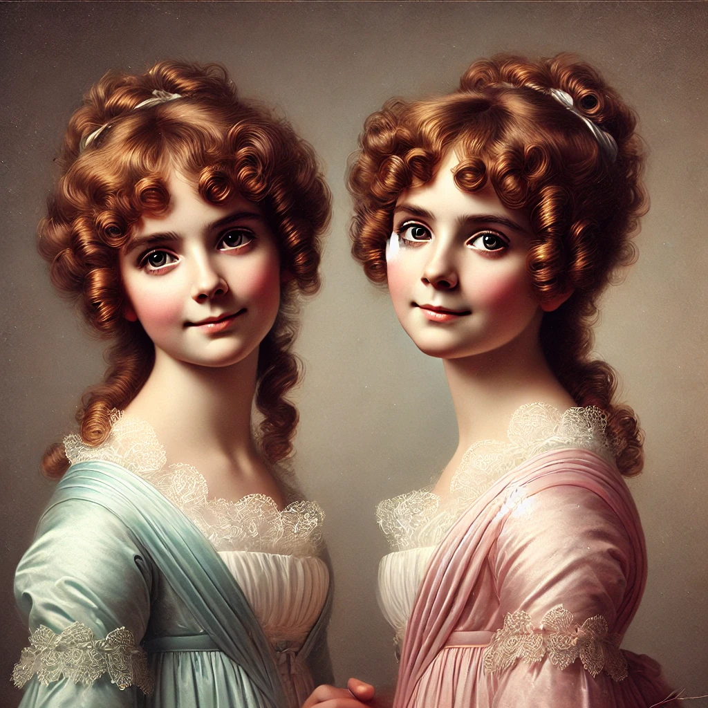

Miss Isabel Glossop Draft
Role Gentlewoman
Nationality British
Status alive
“Giggling sisters, never seen apart.”
Background
Miss Isabel Glossop is one half of a pair of mischievous identical twins, inseparable from her sister Miss_Mary_Glossop. Both were encountered in Brig
“Giggling sisters, never seen apart.”
Background
Miss Isabel Glossop is one half of a pair of mischievous identical twins, inseparable from her sister Miss_Mary_Glossop. Both were encountered in Brighton society during the Loom & Lucidity investigation in spring 1813. The sisters share everything, including their reputation for giggling at inopportune moments.
Stat Block
Stats shared with Miss_Mary_Glossop.
Characteristics
| STR | CON | DEX | INT | POW | APP | EDU |
|---|---|---|---|---|---|---|
| 55 | 45 | 80 | 60 | 30 | 80 | 40 |
- SAN: 30
- Fighting (Brawl): 30% (15/6), damage 1D3
Skills
Soiree guest — no additional skills listed in source.
Campaign Significance
Minor NPC from Brighton society during the Loom & Lucidity investigation. The twins’ identical appearance and penchant for mischief could complicate or enliven any future return to Brighton.
Relationships
- Family Miss Mary Glossop — Identical twin sister — the two are never seen apart
- Knows Marina Garrick — Encountered during the Loom & Lucidity investigation in Brighton